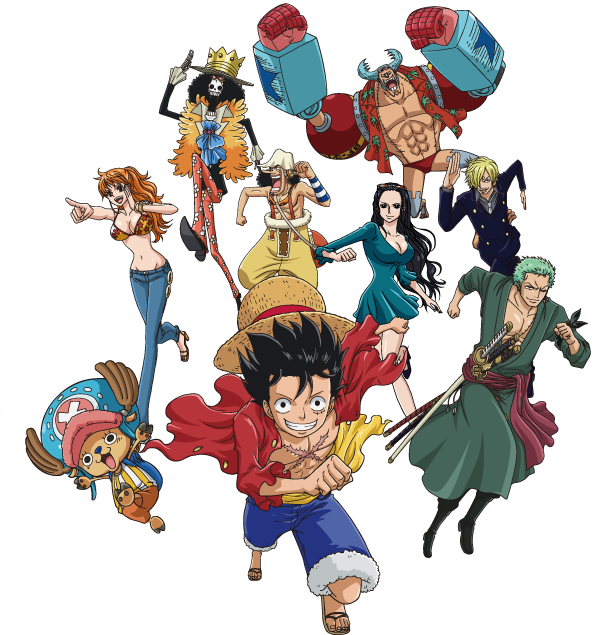
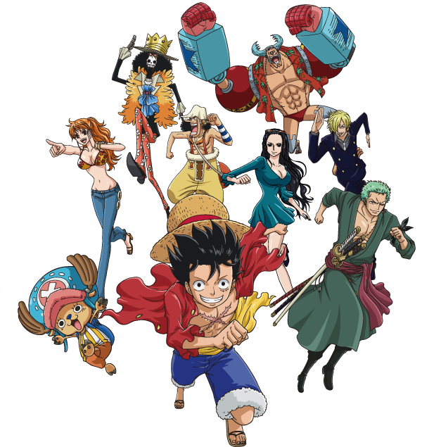
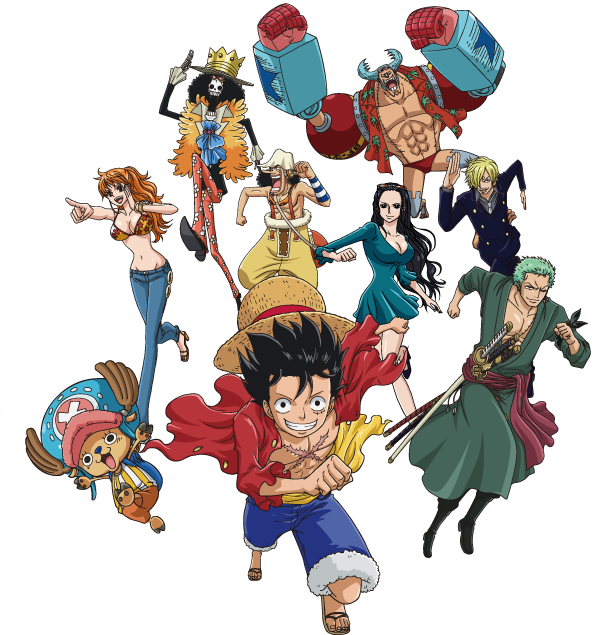
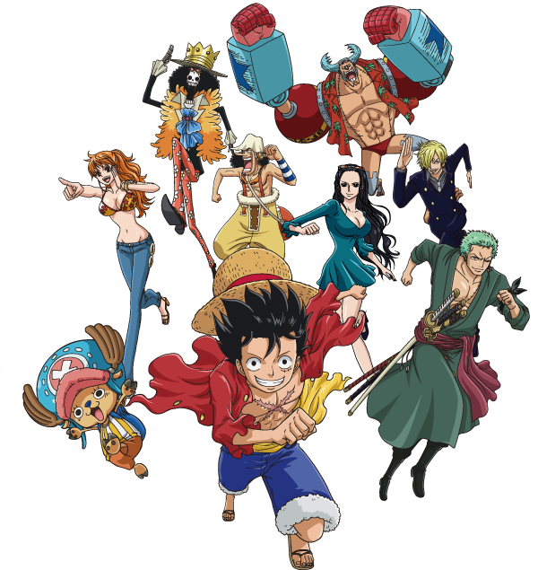

Time

Time

Time

Time
Explore the dangerous sea of Grand line and the New world , with our friend Luffy and
his Nakama
with unique traits and abilities , aswell a very strong pirates ! Sit and read
this article while you learn
more about our Nakama so you can get more information as possible as a
new reader ( listener ) Enjoy !
There is more than 500 devils fruits in this realm , with 3 different sub categories Paramecia , Logia , Zoan . Each of them have unique traits abilities and are all powerful depending on the user . Read below for more information about devils fruits users and different types
You're only twenty minutes away from your delicious and super healthy meals delivered right to your home. We work with the best chefs in each town to ensure that you're 100% happy.
All our vegetables are fresh, organic and local. Animals are raised without added hormones or antibiotics. Good for your health, the environment, and it also tastes better!